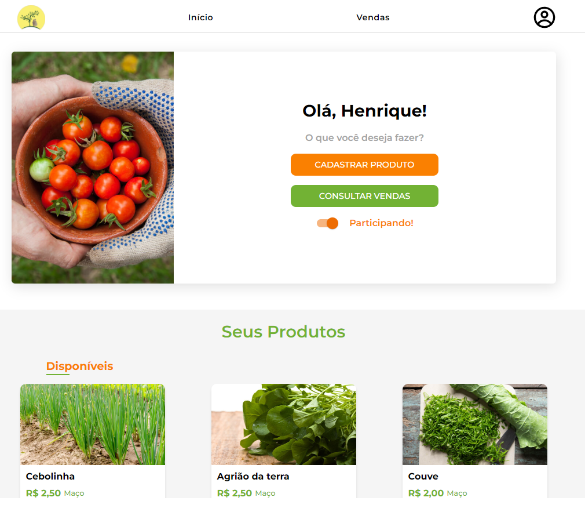
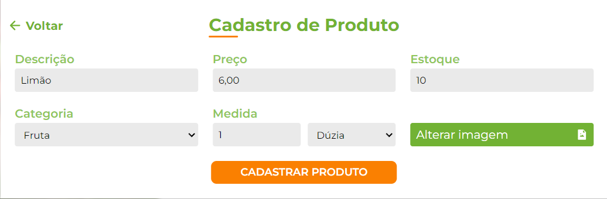
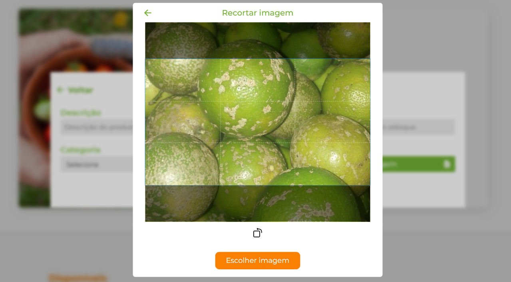
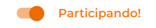
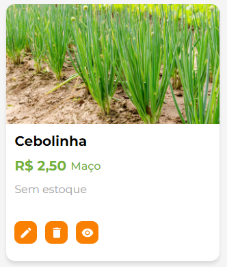

Painel do Produtor
O painel do produtor é a primeira página que aparecerá após o login com o acesso de produtor. Esta é a página mais importante para o produtor cadastrado no sistema. Nela, será possível:
Cadastrar, editar, excluir e alterar a viabilidade de produtos.
Alterar o status de sua participação na feira corrente.
Verificar suas vendas!
Neste painel, o produtor tem controle total sobre suas operações relacionadas à feira e produtos.
{kind=link}
Cadastro de Produto
Para cadastrar um produto na feira, basta clicar no botão CADASTRAR PRODUTO presente no painel, que em seguida será aberto um modal com os campos necessários para o cadastro de um produto. Conforme a imagem a seguir:
Nota
É importante destacar que para o campo medida você precisa selecionar tanto a quantidade quanto a unidade. Ex.: 1 dúzia será 1 em quantidade e “Dúzia” em unidade.
Após o preenchimento de todos os campos será necessário fazer o upload de uma imagem para seu produto. Para fazer isto basta clicar em escolher imagem que você será redirecionado para os seus arquivos, onde você deve escolher uma imagem que representa seu produto. Em seguida será aberto uma área para você cortar a imagem da forma que você desejar.
{kind=link}
Nota
Apenas a área destacada será apresentada para o seu produto, as partes escuras serão cortadas. Portanto selecione a melhor parte da sua foto. Você pode dar zoom, ou rotacionar a imagem para melhor posicioná-la.
Ao concluir todos os passos acima basta clicar em CADASTRAR PRODUTO e esperar pela mensagem de confirmação de que seu produto foi cadastrado com sucesso.
Consultar Vendas
O botão consultar vendas te redirecionará para a página Vendas do Produtor. Referente a feira mais recente que você participou.
Alterar Participação
Com o botão de alterar participação é possível desabilitar ou habilitar a participação do produtor na feira. Ao estar participando da feira, seus produtos serão apresentados normalmente para todos os usuários que acessarem o site. Ao desabilitar sua participação da feira, seus produtos não serão mais mostrados para nenhum usuário que acessar o site, até que seja habilitada novamente.
Seus Produtos
Nesta seção do painel é possível visualizar todos os produtos que o produtor tem cadastrado no sistema. Separado por disponíveis/indisponíveis. Para cada produto apresentado nesta seção você pode:
- Alterar informações do produto.
Ao clicar no lápis presente no card do produto, será aberto o mesmo modal de cadastro de produto com opção para você estar alterando cada informacão cadastrada.
- Excluir o produto.
Ao clicar no ícone da lixeira, você poderá excluir o seu produto do sistema.
Nota
Ao excluir seu produto ele será removido permanentemente do sistema.
- Alterar a disponibilidade do produto.
Ao clicar no ícone para alterar a disponibilidade do produto, você poderá deixá-lo indisponível temporariamente no sistema, de forma com que ele não aparece para os clientes que acessarem o sistema até que você o deixe disponível novamente.

{kind=link}